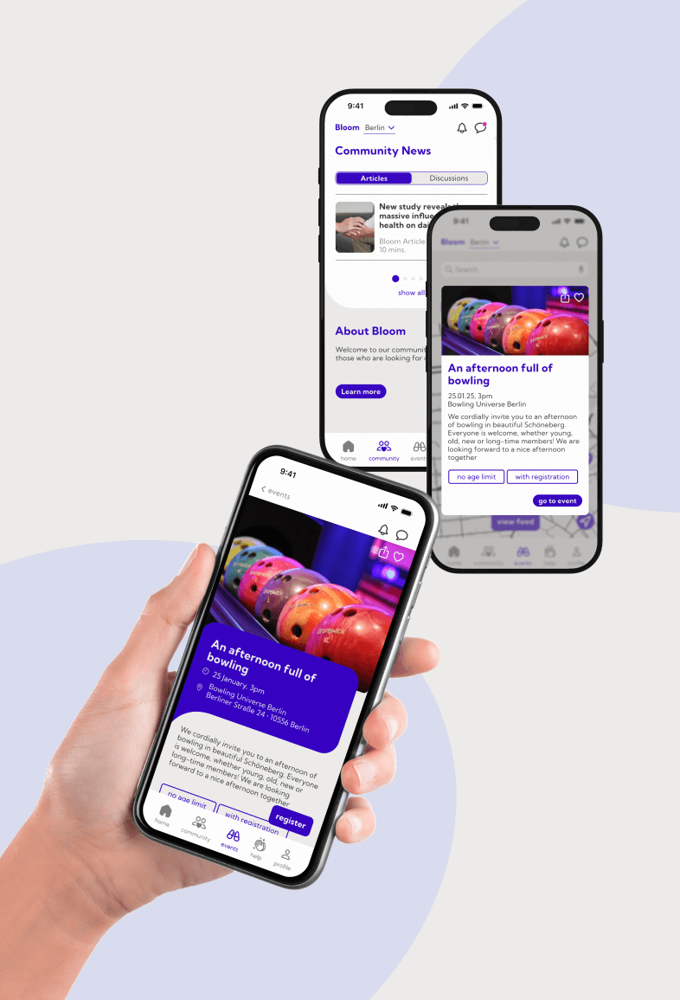
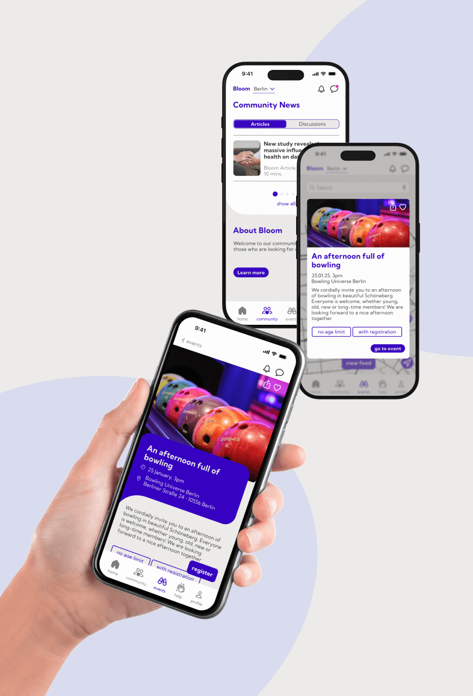

Ich arbeite an der Schnittstelle von User Interface Design, User Experience Design und immersiven Technologien. Mein Fokus liegt dabei auf der Gestaltung digitaler Oberflächen sowie dem 3D-Modelling für Anwendungen in Virtual und Augmented Reality
Hallo, ich bin
Theresa Brand
UI Designerin mit Leidenschaft für digitale Erlebnisse.


Design, das User bewegt
Als User Interface-Designerin entwickle ich digitale Erlebnisse, die Nutzer:innen intuitiv führen und nachhaltig überzeugen. Mit einem Fokus auf klare Strukturen, durchdachte Interaktionen und visuelle Präzision entstehen Interfaces, die sowohl funktional als auch ästhetisch ansprechend sind.
 
